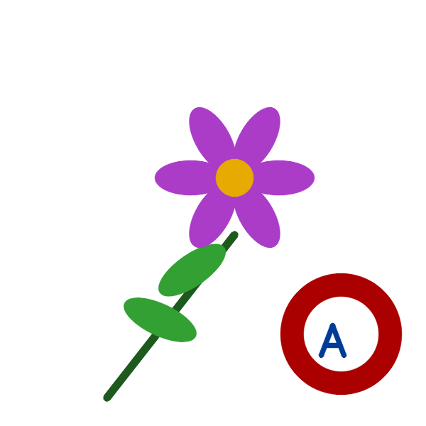
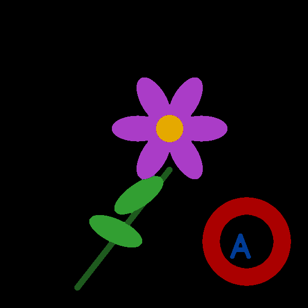
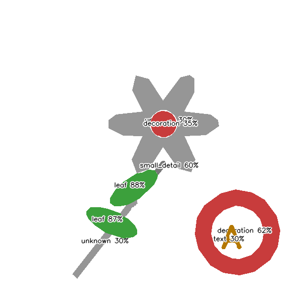
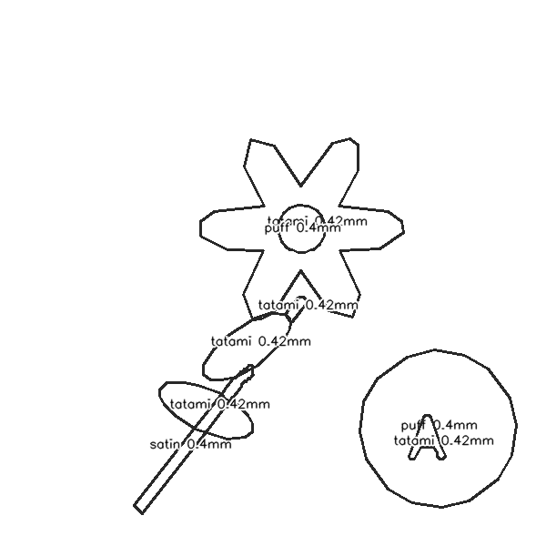
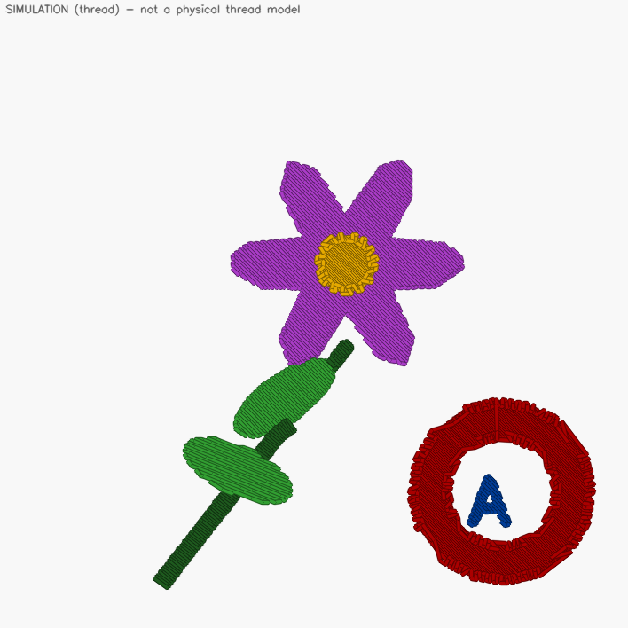
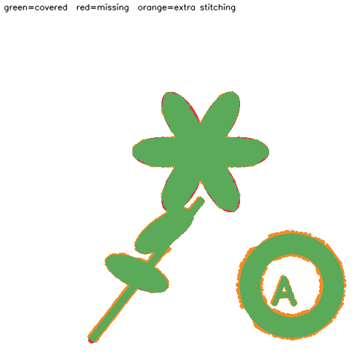

Synthetic reference. Human review required. Previews are SIMULATION; approval in this demo is an automatic stand-in.






| Object | Semantic (heuristic) | Stitch | Risk | Reference match |
|---|---|---|---|---|
| Region 1 | unknown (30%) | tatami | MEDIUM | MATCH |
| Region 2 | small_detail (60%) | tatami | LOW | WARNING |
| Region 3 | unknown (30%) | satin | MEDIUM | MATCH |
| Region 5 | decoration (62%) | puff | LOW | MATCH |
| Region 6 | decoration (35%) | puff | MEDIUM | WARNING |
| Region 7 | leaf (88%) | tatami | LOW | MATCH |
| Region 8 | leaf (87%) | tatami | LOW | MATCH |
| Region 9 | text (30%) | tatami | MEDIUM | WARNING |
{"stitch_count": 3289, "jump_count": 165, "trim_count": 8, "color_changes": 6, "stops": 2, "color_count": 6, "top_thread_length_mm": 6168.6, "estimated_minutes": 10.6}
Repair (before/after): {"stitches": 3301, "jumps": 165, "trims": 8, "color_changes": 6, "stops": 2, "short_stitches": 13, "long_stitches": 1, "travel_mm": 1801.8, "stitched_mm": 6171.2, "travel_fraction": 0.226, "estimated_minutes": 10.62} -> {"stitches": 3289, "jumps": 165, "trims": 8, "color_changes": 6, "stops": 2, "short_stitches": 0, "long_stitches": 0, "travel_mm": 1801.8, "stitched_mm": 6168.6, "travel_fraction": 0.2261, "estimated_minutes": 10.6}; applied in demo: ['cleanup_short_stitches', 'split_long_stitches']
{
"dst": {
"format": "dst",
"status": "IMPLEMENTED",
"bytes": 11090,
"verified": true,
"caveat": ""
},
"exp": {
"format": "exp",
"status": "EXPERIMENTAL",
"bytes": 7522,
"verified": true,
"caveat": "verified against this project's reader only; open in your embroidery software before sewing"
}
}
Not produced (UNAVAILABLE): pes, jef, emb